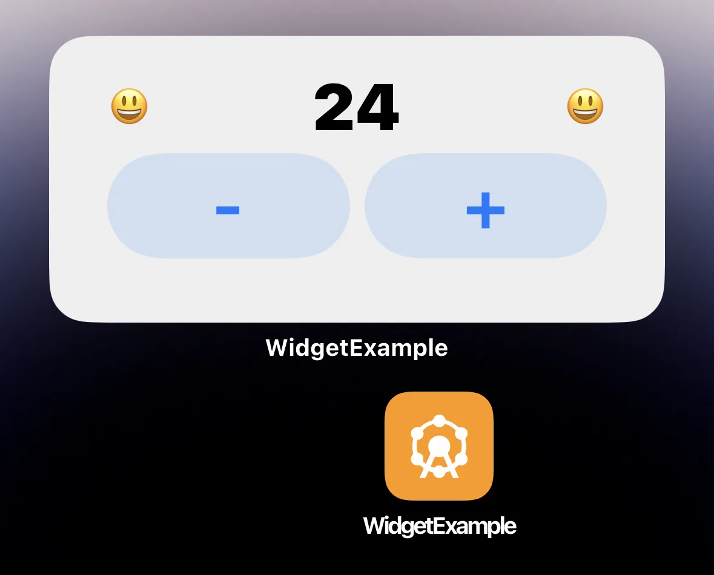
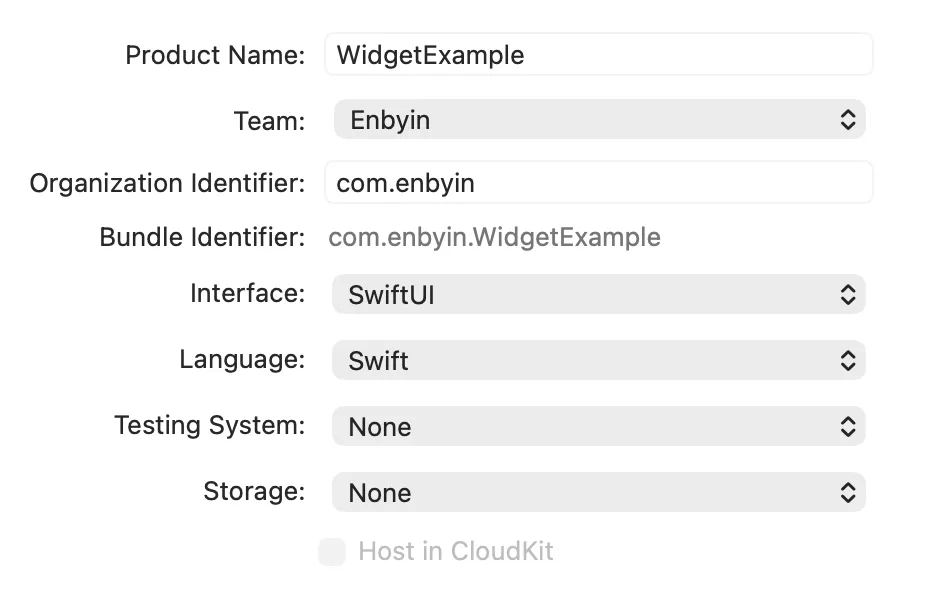
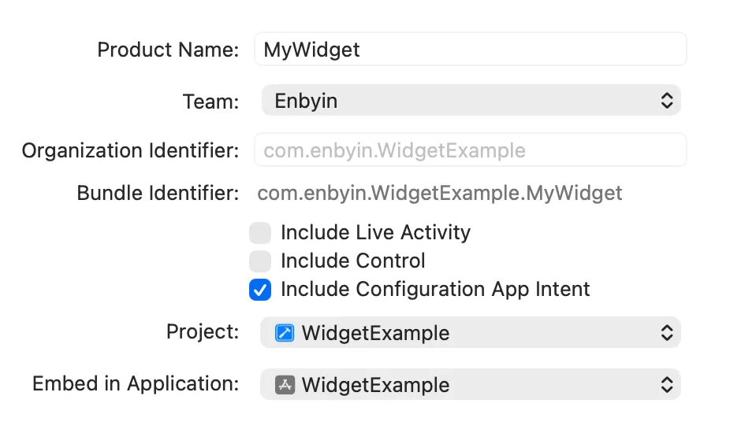

こんにちは、Japan Developer Support Core チームです。
iOS の WidgetKit がリリースされてから、.NET MAUI アプリと WidgetKit を連携させる具体的な実現方法について公開情報はありませんでしたが、2025 年 12 月 15 日に.NET Blog で公開された記事 How to Build iOS Widgets with .NET MAUI で、詳細な手順が紹介されています。今回はこのブログ記事の和訳となります。
これは Toine de Boer のゲスト ブログです。
私は主に .NET MAUI と ASP.NET を利用するバックエンドサービスの開発を担当しています。最近、ウィジェットを利用するアプリ開発に取り組む中で、情報が非常に限られており、当初はなかなかうまくいきませんでした。そこで、.NET MAUI アプリで完全なウィジェットを構築できることを証明するためにこの記事を書くことにしました。しかも、ネイティブ開発環境と同等のプロフェッショナルな方法で構築でき、ビルドやアップデートのたびにすべてが壊れてしまう心配もありません。
これはハンズオン形式のチュートリアルではなく、iOS ウィジェットを構築する際に直面する問題を解決するために、重要なポイントを優先順に整理したものです。.NET MAUI や Xamarin の経験があることが望ましく、macOS へのアクセスが必須です。残念ながら macOS なしで iOS ウィジェットを作成することは不可能です。必要だと思うものを選んでも構いませんが、最初から最後まで読んでみないと、ウィジェットが動作しない細かい点を見逃すかもしれません。本記事は、シンプルな静的ウィジェットの作成から始まり、完全にインタラクティブなウィジェットの基本的なシステムで終わります。
すぐに始められるように、動作するインタラクティブなウィジェットを作成しました。これは github>Maui.WidgetExample にあります。

注記
iOS ウィジェットはホストアプリにリンクされたスタンドアロンのアプリです。シンプルにするために、主に.NET MAUIアプリを「アプリ」、ウィジェットアプリを「ウィジェット」と呼んでいます。
前提条件
作業を始める前に、Apple のデベロッパーコンソールでいくつかの設定を済ませておく必要があります。既存のアプリのバンドル ID に加えて、ウィジェット用のバンドル ID も必要です。もしアプリが com.enbyin.WidgetExample を使用している場合、通常はウィジェットに com.enbyin.WidgetExample.WidgetExtension のように追加します。さらに、両方のバンドル ID には専用グループを持つ App Groups 機能が必要です。アプリのバンドル ID の先頭に group を付けて、例えば group.enbyin.WidgetExample のようにグループ ID を作成します。
Apple Developer Console で事前に準備・取得しておくべき情報:
- バンドル ID (例
com.enbyin.WidgetExample) - ウィジェット (アプリ) バンドル ID (例
com.enbyin.WidgetExample.WidgetExtension) - グループ ID (例
group.enbyin.WidgetExample)
デモ目的で、iOS と Android のみをターゲットにしたデフォルトの .NET MAUI アプリを作成しました。iOS のターゲットには、新たに作成したバンドル ID com.enbyin.WidgetExample を設定しています。また、ウィジェット画面で正しいアイコンが使われているかどうかを簡単に確認できるように、非常に目立つアプリのアイコンも追加しました。
ウィジェットプロジェクトの作成
.NET 開発者である私にとって最大のステップから始めましょう。それは Xcode と Swift での作業です。 Xcode でプロジェクトを作成した後は、Visual Studio Code に切り替えて Copilot とペアプログラミングし、迅速に反復開発を行うことをおすすめします。 Apple の規約に従いながら、しっかりした小さなアプリをすぐにセットアップできます。
Xcode では、まず Swift コードを使って App テンプレートでアプリプロジェクトを作成します。このプロジェクトは、実際のウィジェット拡張を追加するためのベースとなり、必要に応じて簡単なテストにも利用できます。バンドル ID は .NET MAUI アプリと同じものを設定します。バンドル ID を再利用しても問題ありません。なぜなら、このほぼ空の Xcode アプリは実際にリリースされることがないからです。

アプリ プロジェクトができたら、次にウィジェット拡張機能を作成します。Xcode で「File > New > Target」 とクリックし、Widget Extension のテンプレートを選択してください。ウィジェット用に正しいバンドル ID を使っている名前を選ぶことで、後から編集する手間を省くことができます。Include Configuration App Intent を選択すると、すぐに動作するウィジェットを作成できます。

すべてのプロジェクトを作成したら、必ずターゲットごとに iOS バージョンを揃えます。すべての Xcode ターゲットで同じバージョンになっていることを確認します。これを確認するには、メインウィンドウのソリューション設定を開き、ソリューション名をタップして「Minimum Deployment iOS Version」のタブ「General」ですべてのターゲットについて同じバージョンを設定してください。設定が終わったら、「Product > Build in Xcode」 を使ってデバイスで実行してみます。
ウィジェット内のオブジェクトとフロー
Xcode でウィジェット プロジェクトを作成すると多くのオブジェクトが生成されます。最初は驚きますが、ほとんどの情報が一つのファイルにまとめられているためです。そのため、私はいつもリファクタリングから始めます。各オブジェクトを個別のファイルに分け、フォルダー構造を整理します。Swift は厳密に名前空間を使わないので、フォルダー構造に関係なく、このプロジェクト内のすべては同じ名前空間に属します。したがって、こうした分割を行っても問題はありません。
リファクタリング後の開発の流れは意外とシンプルです。以下に、主要なオブジェクトや関数、その役割をまとめます。
- WidgetBundle : ウィジェット拡張機能のエントリーポイントで、ここを経由して 1 つ以上のウィジェットをエンドユーザーに公開できます。
- Widget : 特定のウィジェットの設定で、ビュー、プロバイダー、ConfigurationIntent、サポートサイズなどすべてが一覧化されています。
- AppIntentTimelineProvider : ビューを構築するためのデータモデルを提供し、複数のモデルをタイムラインに従って公開することができます。
- func placeholder : ウィジェットの読み込み中に表示される最小限のデータモデルを提供します（ほとんど表示されることはありません）。
- func snapshot : ウィジェットがギャラリーでプレビュー表示されるときや、画面に初めて追加されたときに使用するデータモデルを提供します。
- func timeline : 通常の利用時に使う単一のデータモデル（または複数のモデル）を提供します。ウィジェットのすべてのデータモデルは基本的にここから取得されます。
- TimelineEntry : データモデル インスタンスです。
- View : ウィジェットの視覚的要素です。
- WidgetConfigurationIntent : エンドユーザーがウィジェットを設定できるようにします。AppIntentTimelineProvider の
timeline()でこれらの設定を受け取ると、必要に応じてデータモデルに反映します。
モデルやキャッシュシステム、単純な静的フィールドなどメモリ内のデータを管理することはあまり意味がありません。iOS ウィジェットは、非常に短時間しか存在しない静的なオブジェクトで、非常に小さな動作を実行します。AppIntentTimelineProvider では関数はほぼ同時に呼び出されますが、実際には別々のプロセスとして動作します。データの受け渡しや保存には、何らかのローカルストレージ(後述)を使用するのが最適です。
アプリのアイコン
以前、ウィジェットが異なるビューで間違ったアイコンを表示する問題が繰り返し発生しました。ウィジェット拡張機能の Assets に明示的に AppIcon の画像を追加し、info.plist で参照することで、ほぼ解決しました。アセットや info.plist を更新してもアイコンが正しく表示されない場合は、テストデバイスを再起動してください。iOS はウィジェットで何らかのアイコン キャッシュを行っているようです。
Xcode では、AppIcon のアセットはウィジェット プロジェクトであらかじめ定義されています。AppIcon の Assets ページを開き、右側の Inspector で iOS の「All Sizes」を選択できます。これですべての画像サイズを設定できます。個人的には手作業が多すぎると感じるので、iOS のオンライン アイコン ジェネレーターを使ってすべてのフォーマットを作成し、そのまま Assets.xcassets/AppIcon.appiconset フォルダにコピーしています。
plist 設定を調整するには、ウィジェット拡張機能の Info.plist を Xcode 以外 (例:Visual Studio Code) で開き、以下のエントリーを NSExtension セクション内に追加してください:
<key>NSExtensionPrincipalClass</key>
<string>MyWidgetExtension.MyWidgetBundle</string>
<key>CFBundleIcons</key>
<dict>
<key>CFBundlePrimaryIcon</key>
<dict>
<key>CFBundleIconFiles</key>
<array>
<string>AppIcon</string>
</array>
<key>UIPrerenderedIcon</key>
<false/>
</dict>
</dict>
<key>CFBundleIconName</key>
<string>AppIcon</string>NSExtensionPrincipalClass を以下のように調整します:
<key>NSExtensionPrincipalClass</key>
<string>{YourWidgetModuleName}.{YourWidgetName}</string>
<!-- YourWidgetModuleName can be found in: Extension > Build Settings > Product Module Name -->
<!-- YourWidgetName is the name of the Widget bundle, like ‘MyWidgetsBundle’ in: -->
<!-- @main -->
<!-- struct MyWidgetsBundle: WidgetBundle { -->ウィジェットのリリースビルドの作成
Xcode でリリースビルドを作成するのは簡単ですが、適切な設定を見つけるのは面倒なことがあります。そこで私は、リリースを専用フォルダにまとめるための標準スクリプトを使っています。このスクリプトを使えば、ビルドパイプラインでも利用できる形で簡単に整理できます。このスクリプトは Xcode プロジェクトのルートから実行し、リリースは XReleases に出力されます。フォルダ名の先頭に「X」を付けているのは、Visual Studio のデフォルトの .gitignore で除外されないようにするためです。
rm -Rf XReleases
xcodebuild -project XCodeWidgetExample.xcodeproj \
-scheme "MyWidgetExtension" \
-configuration Release \
-sdk iphoneos \
BUILD_DIR=$(PWD)/XReleases clean build
xcodebuild -project XCodeWidgetExample.xcodeproj \
-scheme "MyWidgetExtension" \
-configuration Release \
-sdk iphonesimulator \
BUILD_DIR=$(PWD)/XReleases clean buildMAUI アプリへのウィジェットリリースの追加
ウィジェットのビルド出力は .appex（macOS の特殊なバンドルフォルダーで、.app に似たもの）です。
以前、Windows 上の Visual Studio で appex が見つからないというビルドエラーが頻発したことがありました。
これを回避するため、現在はリリース出力を Platforms/iOS/ 配下に配置し、CopyToOutput で含めるようにしています。
以下のスニペットを .csproj に追加すると、ビルドでファイルを利用できるようになります:
<ItemGroup Condition="$(TargetFramework.Contains('-ios'))">
<Content Remove="Platforms\iOS\WidgetExtensions\**" />
<Content Condition="'$(ComputedPlatform)' == 'iPhone'" Include=".\Platforms\iOS\WidgetExtensions\Release-iphoneos\MyWidgetExtension.appex\**" CopyToOutputDirectory="PreserveNewest" />
<Content Condition="'$(ComputedPlatform)' == 'iPhoneSimulator'" Include=".\Platforms\iOS\WidgetExtensions\Release-iphonesimulator\MyWidgetExtension.appex\**" CopyToOutputDirectory="PreserveNewest" />
</ItemGroup>次に、.NET MAUI アプリプロジェクトに ウィジェット拡張機能を追加します。以下の ItemGroup はビルド時にこれが確実に実行されるようにするものです。パスやファイル名には非常に厳密な制約があるため、注意してください。
<ItemGroup Condition="$(TargetFramework.Contains('-ios'))">
<!-- the appex folder path without the platform suffix -->
<AdditionalAppExtensions Include="$(MSBuildProjectDirectory)/Platforms/iOS/WidgetExtensions">
<!-- the appex file without the .appex suffix -->
<Name>MyWidgetExtension</Name>
<!-- the appex folder platform suffixes -->
<BuildOutput Condition="'$(ComputedPlatform)' == 'iPhone'">Release-iphoneos</BuildOutput>
<BuildOutput Condition="'$(ComputedPlatform)' == 'iPhoneSimulator'">Release-iphonesimulator</BuildOutput>
</AdditionalAppExtensions>
</ItemGroup>この時点で、ウィジェットは .NET MAUI アプリのビルド内で表示されるはずです。現状では、.NET MAUI アプリからのデータや通信を一切使わず、完全に独立して動作するウィジェットになっています。
注記
Visual Studio から「iOS ローカルデバイス」向けにビルドすると、ウィジェット拡張はおそらく見えません。
アプリとウィジェット間のデータ共有
iOS のウィジェットは、独立したアプリとして扱うのが最適です。.NET MAUI アプリとウィジェットは自由にデータを交換したり通信したりすることはできません。
データ交換には、iOS の UserDefaults に対応する .NET MAUI の Preferences を使用できます。両方が同じデータソースを使うようにするため、両方のプロジェクトに同じグループ ID を指定した Entitlements.plist が必要です。このグループ ID は、以前バンドル ID を App Groups 機能で設定した際に作成したものです。
以下は、グループ ID group.com.enbyin.WidgetExample を指定した Entitlements.plist の例です。
<?xml version="1.0" encoding="UTF-8"?>
<!DOCTYPE plist PUBLIC "-//Apple//DTD PLIST1.0//EN" "http://www.apple.com/DTDs/PropertyList-1.0.dtd">
<plist version="1.0">
<dict>
<key>com.apple.security.application-groups</key>
<array>
<string>group.com.enbyin.WidgetExample</string>
</array>
</dict>
</plist>
明確にするために:ウィジェットの Xcode プロジェクトと .NET MAUI プロジェクトの両方で、このようなエンタイトルメントを使用する必要があります。また、エンタイトルメントを追加した後は、Xcode プロジェクトの新しいリリースを作成することを忘れないでください。さらに、ウィジェットの Xcode プロジェクトのエンタイトルメントは、.NET MAUI ビルド用の .csproj 内で AdditionalAppExtensions セクションに記載が必要です。
<ItemGroup Condition="$(TargetFramework.Contains('-ios'))">
<!-- the appex folder path without the platform suffix -->
<AdditionalAppExtensions Include="$(MSBuildProjectDirectory)/Platforms/iOS/WidgetExtensions">
<!-- the appex file without the .appex suffix -->
<Name>MyWidgetExtension</Name>
<!-- the appex folder platform suffixes -->
<BuildOutput Condition="'$(ComputedPlatform)' == 'iPhone'">Release-iphoneos</BuildOutput>
<BuildOutput Condition="'$(ComputedPlatform)' == 'iPhoneSimulator'">Release-iphonesimulator</BuildOutput>
<!-- entitlements for the appex, without this the shared storage won't work -->
<!-- errors that entitlements could not be found: include the entitlements with CopyToOutput -->
<!-- errors when reading entitlements during build: store entitlements file with line-ending type LF -->
<CodesignEntitlements>Platforms/iOS/Entitlements.MyWidgetExtension.plist</CodesignEntitlements>
</AdditionalAppExtensions>
</ItemGroup>この時点で、アプリとウィジェットは同じデータソースを利用できるようになっているはずです。
両方のプロジェクトで、特定のグループ ID の使用をコード内で明示的に指定する必要があります。
.NET MAUI では Preferences.Default を使用せず、sharedName パラメーターにグループ ID を指定してください。
// example how to store data in .NET MAUI.
Preferences.Set("MyDataKey", "my data to share", "group.com.enbyin.WidgetExample"); // example how to store data in Swift.
UserDefaults(suiteName: "group.com.enbyin.WidgetExample")?.set("my data to share", forKey: "MyDataKey")
// example how to get data in Swift.
let data = UserDefaults(suiteName: "group.com.enbyin.WidgetExample")?.string(forKey: "MyDataKey")注記
ストレージキーは大文字を区別しています。問題を避けるために、キーはシンプルにし、オプションで一貫して小文字にすることをおすすめします。
アプリからウィジェットへのコミュニケーション
ウィジェットは、アプリがデータを共有したタイミングを認識できず、アプリもウィジェットが共有したタイミングを認識できません。アプリからウィジェットへ新しいデータが利用可能であることを通知する仕組みは、ウィジェットからアプリへの通知とは異なります。アプリからウィジェットへの通知は、Apple の WidgetKit API を使えば簡単です。ただし、この API は .NET MAUI では利用できないため、自分でバインディングを作成する必要があります。この API は非常に小規模なので、バインディングの実験には最適です。今回のデモでは、すでにバインディングが実装されている NuGet パッケージ WidgetKit.WidgetCenterProxy を使用します。
WidgetKit API は主に 2 つのオプションを提供します：「デバイス上のすべてのウィジェットを再読み込みする」または「特定の種類のウィジェットのみを再読み込みする」の2つです。私はいつも後者を使用します。なぜなら、これらのオプションを頻繁に使うとプラットフォームが無視してしまうからです。また、自分のウィジェットだけを更新することが推奨されていると思います。ウィジェットの種類は、Swift のウィジェットオブジェクト内の kind プロパティで簡単に確認できます。
// Example on how to refresh all Widgets of kind ‘MyWidget’ in .NET MAUI
var widgetCenterProxy = new WidgetKit.WidgetCenterProxy();
widgetCenterProxy.ReloadTimeLinesOfKind("MyWidget");注記
WidgetKit の再読み込み機能は OS への「丁寧なリクエスト」であり、実際にいつ実行されるか、また使用頻度が多すぎないかは OS が判断します。通常、ウィジェットの更新はすぐに行われます。
ウィジェットからアプリへの通信
ウィジェットからアプリへの通信は、オプションでごく少量のデータを含めて、2つの方法で行うことができます。デフォルトでは、ウィジェットをタップすると対応するアプリが起動しますが、これを widgetUrl() で上書きすると URL 内にデータを含むディープリンク（Deep Link）でアプリを開けます。ただし、ウィジェットは静的オブジェクトとして構築されるため、widgetUrl を使用する場合は、ウィジェットビューのセットアップ時（多くの場合プロバイダー内）に URL をあらかじめ決定し、データモデルを介して文字列として渡す必要があります。
// example of using a DeepLink url in Swift
struct MyView : View {
var body: some View {
// my views
}.widgetUrl(URL(string: "mywidget://something?var1=dummy-data"))
}AppIntents から始まる別の通信方法もあります。AppIntent は、ボタンなどのインタラクティブ要素にアクションやロジックを紐付ける仕組みです。OS はこの処理に少し時間を与えるため、HTTP 呼び出しのような長めの処理も可能です。 例えば、カスタム AppIntent をボタンに紐付けて、ウィジェットが保持するストレージ内の値を変更し、その後 AppIntent 自体がウィジェットのリフレッシュをトリガーします。この結果、ウィジェットは新しいデータで再描画され、インタラクティブな操作が可能になります。
// example of an AppIntent changing data and reloading widget
struct IncrementCounterIntent: AppIntent {
static var title: LocalizedStringResource { "Increment Counter" }
static var description: IntentDescription { "Increments the counter by 1" }
func perform() async throws -> some IntentResult {
var currentCount = 0
let userDefaults = UserDefaults(suiteName: Settings.groupId)
let storedValue = userDefaults?.integer(forKey: Settings.appIncommingDataKey)
if let storedValueCount = storedValue {
currentCount = storedValueCount
}
// do action
let newCount = currentCount + 1
// Save new value
userDefaults?.set(newCount, forKey: Settings.appIncommingDataKey)
// Reload timelines > refreshing widget
WidgetCenter.shared.reloadTimelines(ofKind: "MyWidget")
return .result()
} // example of Button using AppIntent in Swift
struct MyWidgetView : View {
var entry: Provider.Entry
var body: some View {
VStack(spacing:4) {
Button(intent: IncrementCounterIntent()) {
Text("+")
}
}
.padding()
}
}iOS では、ウィジェットは バックグラウンドでアプリと通信できません。 直接呼び出しを行うと、アプリがフォアグラウンドに移動します。 アプリを閉じたまま処理を実行するには、ウィジェット内で AppIntents を使用してバックエンドを呼び出します。バックエンドはアクションを実行し、必要に応じてアプリにサイレント プッシュ通知を送信できます。アプリはその通知を受け取り、必要ならバックグラウンドで更新を処理します。 この仕組みは、任意の Web サービスや既存のプッシュ通知プロバイダーで実現可能です。そのため、デモコードでは完全な実装ではなく、エントリーポイントとして例示的な SilentNotificationService のみを含めています。
ウィジェット開発の効率化
インタラクティブウィジェットが完成したら、次のステップはロジックの実装とウィジェットのレイアウトやスタイリングの調整です。理想的にはすべてのロジックを.NET MAUI アプリにまとめることで、他のプラットフォームでも再利用できます。ただし、ストレージの処理、ビューの構築、バックエンドとの簡単な通信など、一部は Swift での実装が避けられません。C# から Swift への移行には多少の学習コストがかかります。そのため、Visual Studio Code に切り替えて Copilot とペアプログラミングし、効率的に反復開発を進めることをおすすめします。Copilot は一度で完璧なコードを生成するわけではありませんが、優れた相棒となり、作業を効率的に進める助けになります。さらに、Xcode を同時に開いて頻繁にビルドとテストを行い、問題を早期に発見してください。ウィジェットを Xcode の Canvas ビューで #preview データを使って開いておくと、ビルド後すぐにビジュアルの変更を確認できます。
まとめと実用的なヒント
インタラクティブウィジェットの実装が完了したら、次のステップはロジック、レイアウト、そして全体的なデザインの洗練です。 コアロジックの大部分は .NET MAUI アプリ内に保持し、他のプラットフォームでも再利用できますが、ストレージ処理、ビュー構築、軽量なバックエンド処理などウィジェット固有のタスクは、多少の Swift 実装が必ず必要になります。 ここでは、C# から Swift への移行をスムーズに進めるための最終的なヒントをいくつか紹介します。
- Swift のコードを作成する際は、Copilotとペアプログラミングするために Visual Studio Codeを使いましょう。
- Xcode を開いたままにして、ビルドとプレビューを繰り返し、問題を早期に発見しましょう。
- Xcode の Canvas ビューを開き、#preview データを使用して、ビジュアルの変更をすぐに確認しましょう。
Android ウィジェット開発に関する記事も近日公開予定です。続報をお楽しみに!
本ブログの内容は弊社の公式見解として保証されるものではなく、開発・運用時の参考情報としてご活用いただくことを目的としています。もし公式な見解が必要な場合は、弊社ドキュメント (https://learn.microsoft.com や https://support.microsoft.com) をご参照いただくか、もしくは私共サポートまでお問い合わせください。